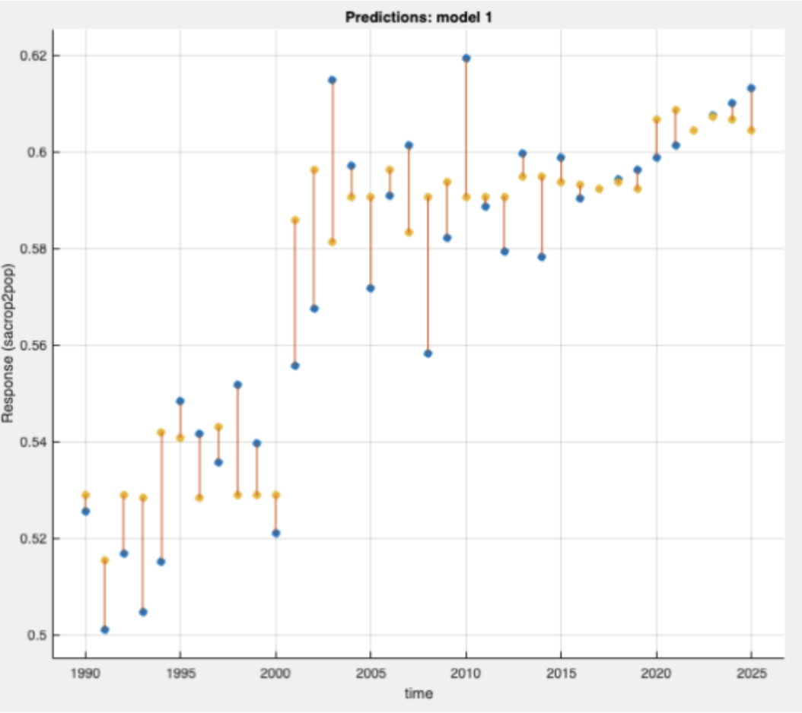
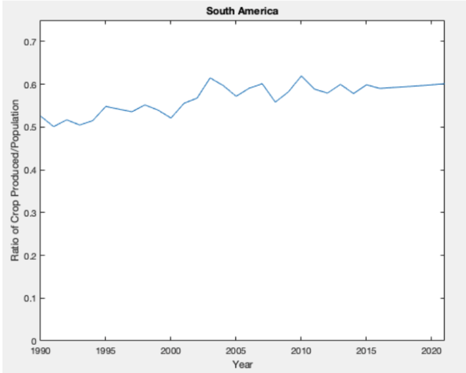

Analysis of the Sustainability
of the World's Growing Population
Fall 2022
Project Description
This 3-member team project analyzed crop production data and population growth trends to study global sustainability challenges. Using MATLAB and data analysis techniques, I explored how resource production and human population growth interact across world regions.
The analysis used more than 20,000 datasets from 1990 to 2022 and generated predictions through 2025.
My Responsibilities
- Analyzed data on crop production and population growth to assess global sustainability conditions.
- Predicted regional trends through 2025 using more than 20,000 data records.
- Performed statistical analysis and machine learning in MATLAB across seven continents.
Skills I Learned
- Large-scale data analysis in MATLAB.
- Statistical modeling and machine learning for forecasting.
- Framing technical analysis around real-world sustainability questions.
Project Links
No public GitHub repository is linked for this project yet.
Photos

